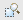

Table view¶
The purpose of the Table view is to inspect and edit the data attached to a “Feature” or “Geometry” for the selected layer.
When you select a layer anywhere in uDig the Table view will load the features of that layer and display all the non-geometric data about the feature.

Table¶
The table is used to show the non-geometric data as a series of rows. Each row describes a feature on the map, you can select rows in the table and see the selection on the map at the same time.
Each feature is represented as:
- The first column in the table is the ID of the feature. The feature ID may not be edited.
- Each other column contains the information of a single attribute. You sort the table by clicking on the column name.
For read-write data you can change attribute information directly in the table. If an illegal entry has been entered the cell will turn red. An error message is displayed in the status line of the application.
Toolbar¶
- Activate the selection tool  - Zooms to display all the selected features.
- Promote all the selected items to the top of the table.
Selection¶
The Selection field allows users to enter queries that will select items in the table. Those selection can be used to copy feature to other layers or exported to create new layers.
To the left of the Selection field is a Combo/Dropdown that determines how the query is interpreted. The following choices are available:
- All - a regular expression search against all attributes
- AttributeName(s) - a regular expression search against the selected attribute
- CQL - use the Constraint Query Language to define a query
To the right of the selection field is a check box that can be used to find either all of the features, or the first feature, matching the query.
Related concepts
Related tasks
Related reference